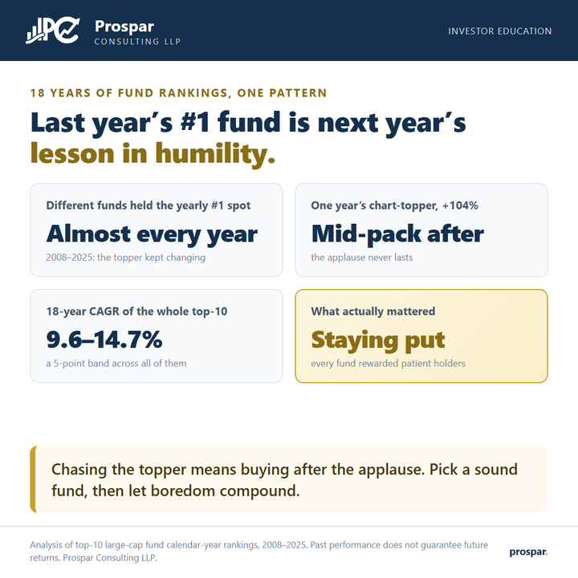
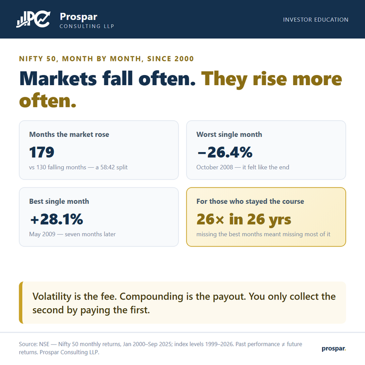
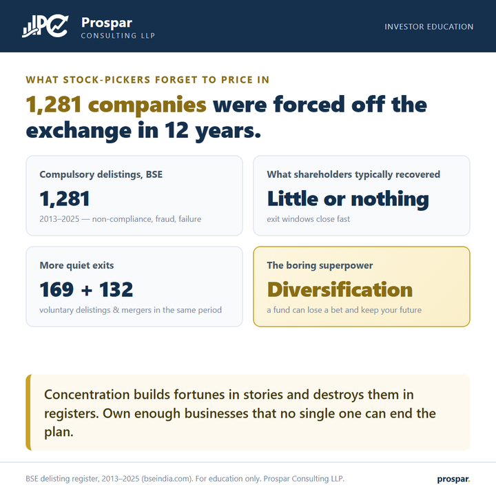
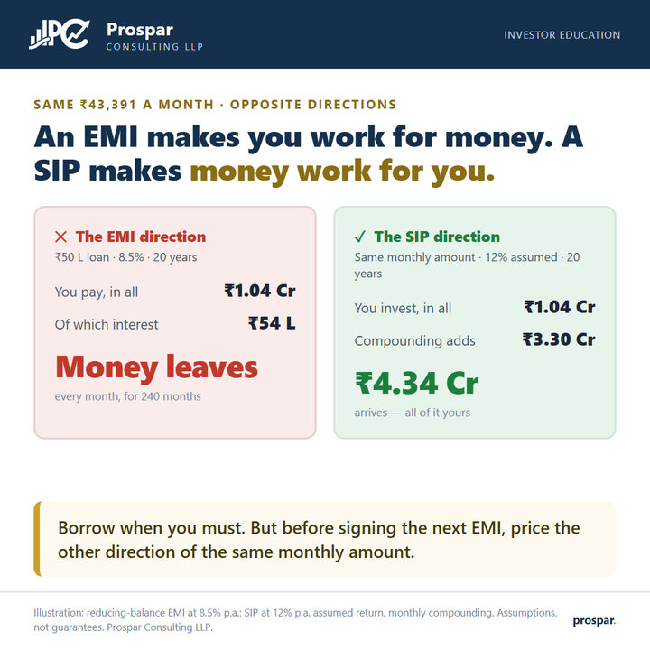

Insights
The data behind disciplined investing: short, honest, and backed by numbers you can check yourself in our calculators. Every story opens as a page you can share, or grab the images from the download centre.
Behaviour & discipline
The investor, not the market, decides most outcomes.

SIPs look broken in year 3
Quitting froze ₹3.5L at ~₹4L; continuing reached up to ₹1.07 Cr.
Read
The two investors inside you
Same fund, same SIP: ₹66 L vs ₹1.12 Cr.
Read
Why last year's best fund disappoints
18 years of rankings: the topper keeps changing, patience keeps winning.
Read
The most expensive word is "later"
Waiting five years costs ₹1.63 crore.
ReadMarket truths
What the long record actually says: crashes included.

₹1 crore quietly becomes ₹25 lakh
The silent tax on idle money, and the defence.
Read
Volatility is the fee
179 rising months vs 130 falling, since 2000.
ReadEvery window had a crash
And the full 26-year journey still paid 26×.
Read
Survivorship has a register
1,281 forced exits in 12 years: diversify.
ReadMoney choices
The everyday decisions that quietly set your net worth.

The ₹60 lakh question: flat or fund?
Identical income for 15 years: ₹1.30 Cr vs ₹2.40 Cr.
Read
Two directions of the same rupee
₹43,391/month: repay ₹1.04 Cr, or build ₹4.34 Cr.
Read
The two ways to love gold
Jewellery for joy; the efficient wrapper for wealth.
Read
One SIP, a lifetime of paycheques
Start at 25, retire on ₹8.7 lakh a month.
ReadMaps & frameworks
Mental models for the whole journey.


All insights are for education only and do not constitute investment advice. Figures are from cited public data or clearly-labelled illustrations with stated assumptions; past performance does not guarantee future returns. Mutual fund and market-linked investments are subject to market risks. Prospar Consulting LLP.